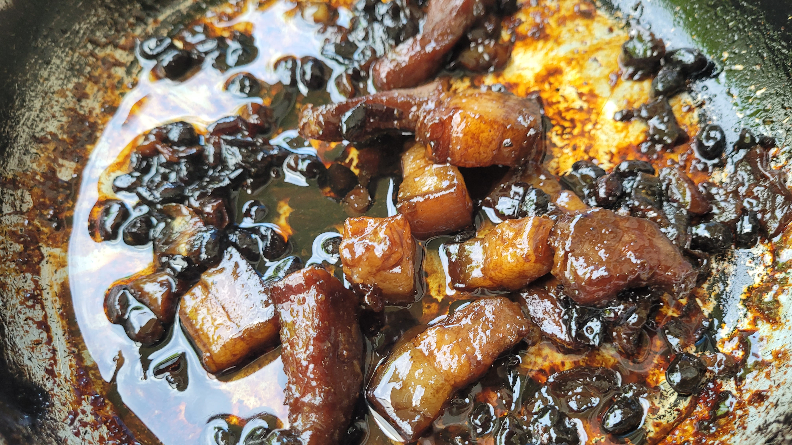

SPECIAL PORK HUMBA

Description
Pork humba
is a popular Filipino braised pork dish from the Visayas region that features fatty cuts of pork—such as pork belly or
pork hocks—slow-cooked until melt-in-your-mouth tender.
Ingredients
- Pork belly
- Pineapple juice
- Salt
- Soy Sauce
- Black Beans
- Pineapple Chunks
- Onion
- Vinegar
- Garlic
- Brown Sugar
- Peppercorn
Steps to Cook Mouth Watering Pork Humba
- Cut 1 kilogram of pork belly into serving-size pieces. Heat a pot over
medium-high heat and brown the pork in its own fat until lightly golden.
This gives the humba a richer flavor.
- Add 1 chopped onion and 5 cloves of minced garlic. Cook for 2–3 minutes, until fragrant.
- Pour in ½ cup soy sauce, ¼ cup vinegar, ½ cup brown sugar, and 2 cups water. Add 2 bay leaves and 1 teaspoon whole peppercorns.
Do not stir immediately after adding the vinegar; let it boil first for about 2 minutes.
- Lower the heat, cover the pot, and simmer for 1 to 1½ hours. Stir occasionally and add a little water if the sauce becomes too dry.
Cook until the pork is very tender.
- Add 1 small can of pineapple chunks with a little of its juice, ½ cup banana blossoms, and ¼ cup salted black beans. Simmer for another
15–20 minutes.
- Taste the sauce. Add more brown sugar for sweetness, soy sauce for saltiness, or a small amount of vinegar for more tang.
- Continue cooking uncovered for a few minutes until the sauce becomes thick, glossy, and coats the pork. Serve hot with steamed rice.
Back to Home